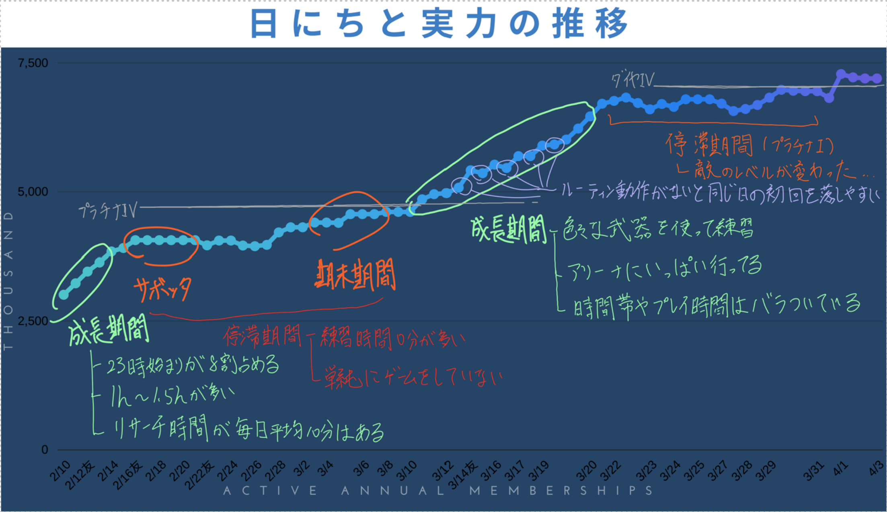
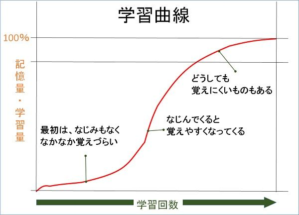
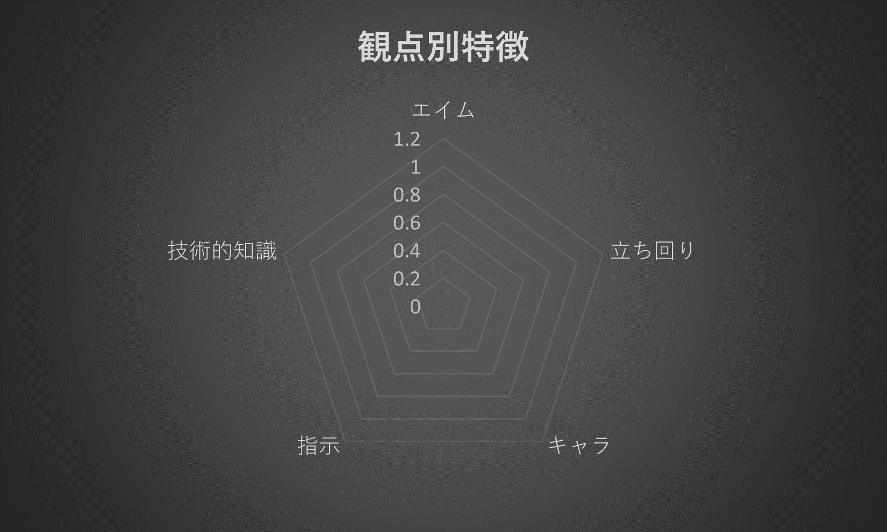
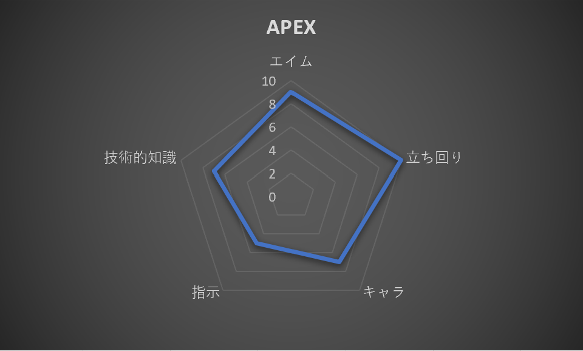
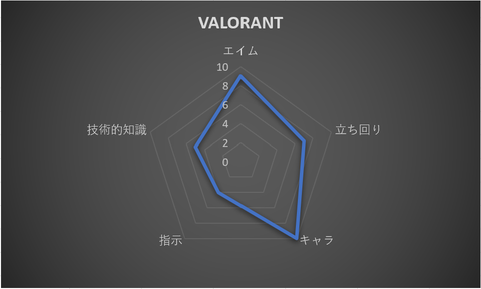
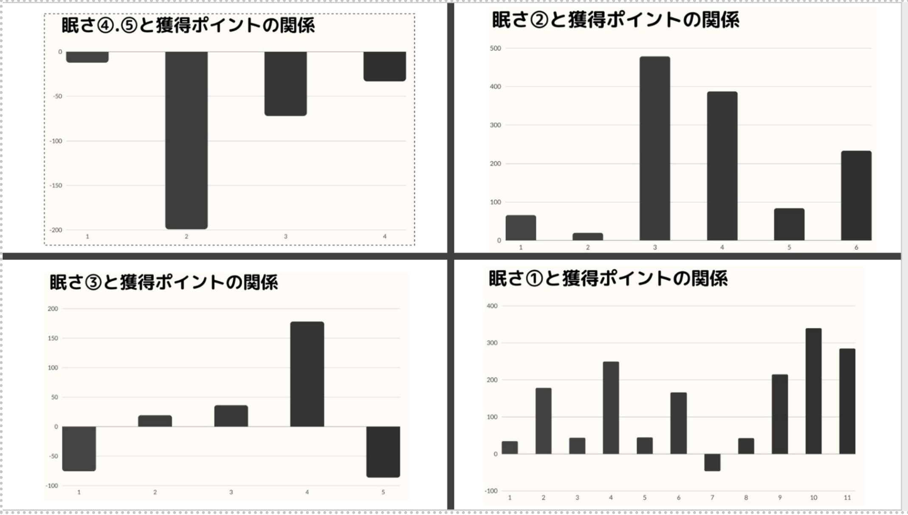

step
停滞期間と成長期間

FPSには成長が対戦で成果を出す「成長期間」と敵とのレベルが拮抗しあう「停滞期間」がある。
グラフを見てもわかるように、横ばいに進む時期と緩やかに上昇していく時期がある。成長の周期は２～３週間で訪れる。
なかなかランクが上がらなくなったと悩んでいる人も今は長いトンネルに入ったと深く心配しなくていい。
もちろん期間の目安である、３週間以上ポイントが上がらなかったり、不安定な試合を繰り返している場合は特にプレイスタイルを見直す必要がある。
point
停滞期間を短くする
停滞期間を短くするよう意識することで、上達度が爆発的に上がる！
主な練習
・エイム練習
・大会動画視聴
step
成長曲線

参考：【Pinterest-YAKUJI MAN】
先ほどのグラフをより大きな視点で描いていくと、このような「成長曲線」のグラフが出来上がる。
横軸をプレイ時間、縦軸を能力と考えたとき、始めは一気に上達するが、２～３日ほどで学習度が減少していく、
10日目ぐらいからは緩やかな学習曲線へと落着き、理想とのギャップが目立ち始める。
point
自分のレベルを把握する
プレイ時間に対する目標設定を間違えると、辛く、成長を実感しにくい時期を送ることになる。
自分の現在地をグラフで確認できることで、スランプでのメンタルを維持したり、目標とする実力を設定できる。
ゲームを継続するためにも自分の立ち位置を理解するのはとても重要。
主な練習
・コーチング動画の視聴
・ランクマッチやスコアボードの実践
step
ゲームごとの重点の違い

このレーダーチャートは著者が独自に編み出した観点別でのゲーム評価表で、
各ゲームにそれぞれの評価を入れることでゲームの特性が把握できる。
エイム：相手に弾を当てるFPSの中枢的能力
立ち回り：地形が複雑になったり、マップが狭いほど必要になる能力
キャラ：キャラクターコントロールやそのバリエーションに応じたスキルを使い分ける能力
指示：チーム戦やコミュニケーションツールを多く使うゲームに活躍する連携能力
技術的知識：小技や武器のセレクトなどが勝敗に大きくかかわるゲームに必要な能力
以下にいくつかの例を作った。


point
割合の大きい観点から練習する
ゲームで重要とされる観点から重点的に練習することで、より効率的に一つ一つのFPSに合った練習ができる。
step
体調が及ぼすゲームパフォーマンス

眠さ指数
①平常
②少し眠い
③まあまあ眠い
④かなり眠い
⑤ほぼ寝ている
FPSゲームは最も集中力を要するゲームで、目、耳、手先といった反応や判断を常に必要とする。
そのため体調の管理が非常に重要になる。一番避けたいのは「眠い時」であり、次いで「お腹が空いている時」だ。
グラフからもわかるように極度の疲労がたまっている状態ではとても効率の悪い時間を過ごしてしまい、上達にはつながらない。
point
ゲーム時間の固定化・集中力の維持
要点は集中力が持つ時間を自分で把握し、時間帯を決めた継続した練習を行うことだ。
集中力を伸ばす方法なども調べて自分に合うものを試していくのも上達法を知る一歩になる。
主な練習
・時間数を測ったプレイ
・マインドに関するサーチ（動画）
step
正解を知る重要性
FPSゲームは自由度がとても高く、一試合１位になるまでには約400~500個もの判断を下している。
そんな無数の判断の中で１つでもミスを起こすと負けの原因となってしまうため、
何度も繰り返さないためにも間違いを「間違ってた」と気づける必要がある。「正解の詰めるタイミング」、
「正解の見逃す判断」を知ることが考えてプレイすることにつながる。
point
間違いに気づく、正解がわかる
これらを知る方法で最も手っ取り早いのは「自分よりうまい人を観ること」と「コーティングされている人を観ること」で、
自分で試すのと並行でプロゲーマー団体が配信するプレイスタイルや考え方を国内外問わず参考にし、
自分で見るポイントを決めて視聴することでより意識したプレイをゲームで心がけられる。
主な練習
・コーチング動画
・プロの大会動画、解説動画
・上手い友達の画面をシェア
-------PlayStation®5のシェアプレイ--------------------------------------------------------------------------
さらに
練習と試合の割合
練習と試合の割合はとてもむずかしい問題で筆者も長い間研究した。結果として言えるのは、
| プレイ時間 |
練習・試合 |
| 000～230h |
1対9 |
| 230～550h |
2対8 |
| 550～990h |
3対7 |
| 990~ |
4対6 |
この表のように始めはゲームの武器やマップ、プレイスタイルを確立させていき、
慣れてきたらプレイ時間につれて課題が出てきたエイムとキャラコンの練習時間を増やしていくと上達していく。
ゲームに対する基礎知識が土台にあるため、自分がマップや武器に対する知識があるかいま一度確認してみよう。
また上記のポイントを踏まえて新しいゲームに挑む場合、以下の練習時間でさらに効率的に進められると推測した。
| プレイ時間 |
練習・試合 |
| 000～60h |
1対9 |
| 60~120h |
3対7 |
| 120~200h |
4対6 |
一般的な上級者のラインまでの到達時間は1000hと言われているが、プロの中には200hで上級ランクまで到達している人もいる。
練習時間が増えることは精神的に参ってしまうため、音楽を聴きながらや時間を決めながらやるといい。
-------PlayStation 5でSpotifyを利用する新たな方法------------------------------------------------------------
さらに
ルーティン
毎日の練習時間と練習時刻を決めることはプレイヤーにとって「効率的になる」という良い影響が見られた。
時間に余裕がある人でも自分の集中力が何分持つか検証し（一般的には９０分とされている）、やる時間を決め、
また時刻も「昼ごはんの後」や「お風呂の後」などと習慣に取り込むことで、より気持ちの面で気が散らないと推測する。
用語解説↓
ファーストパーソン・シューター→操作する人の視点で場面が表示され 3 次元シューティング-ゲーム（標的を打ち落とすゲーム）の総称。
FPS、TPSゲームでは敵に武器の「照準を合わせる」という意味で用いられる。
主催者がビデオゲームやモバイルゲームを使用した対戦競技を開き、視聴者へ動画として公開されているもの。
基本的にはプロの人がプレイヤーのプレイ動画を振り返り、指導、アドバイスをする動画。
RP（ランクポイント）を稼ぐことによって、上位ランク（＝ティア）に上がっていけるマッチのこと。マッチ終了時の順位やキル、
アシスト数に応じたRPを獲得できる。周りが自分と同じレベルになるため、自分のランク帯が分かる。
気力や体調が一時的に衰え気味で，仕事の能率や成績が落ちる状態。
実践データ一覧↓
VALORANT一週間チャレンジ
BATTLE FILED5一週間チャレンジ